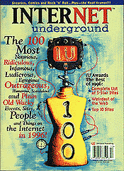

 volume 2, issue 1
December 1996 electric paper
Cover Story:
The IU 100
Here they are: The 100 most notorious, ridiculous, infamous, ludicrous, egregious, outrageous, humorous, scandalous, and plain old wacky events, sites, people and trends on the Internet in 1996 (Try saying that three times fast).
Also Featuring:
More Than Love
by Steve Knopper
Courtney, as usual, gets most of the attention (along with most of the cake), but a mix of musicians, from Poe to Bob Mould to Roger McGuinn, also know the difference between a flame war and a Fender Strat.
The X-Plainable Files
by Jonathan Vankin
UFOs? Big Foot? Government cover-ups? Skeptics toss cold water in the faces of those Netizens who believe.
FAQ: Brewster's Trillions
by Matt Richtel
Find out why Brewster Kahle is archiving the Internet, one terabyte at a time.
Departments:
Top 10 of the Net Top Ten:
These ten sites are all that.
Flamethrower:
The rich get faster and the poor get poorer.
Weirdest of the Web:
The weirdest of the weird.